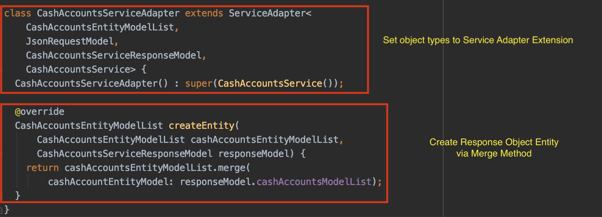

- Isolation of Responsibilities
- Business Logic (BLoc)
- UI
- Use Cases
- Service Adapters
- Decoupled Structure
- Easily swap services, databases, etc.
- Classes are not dependent on each other
- Entities are concerned only about their own functionalities
- Use Cases
- Service Adapters
- Single Purpose Entities
- Classes serve one purpose

The Clean Framework is built upon the "SOLID" principles which are:
S: Single Responsibility
O: Open/Closed Approach
L: Liskov Substitution
I: Interface Segregation
D: Dependency Inversion
- - Classes/Entities should have one purpose, not be God classes
- - Classes should be inheritable for functionality but not modifiable
- - Every subclass should be substitutable for their parent class
- - Don’t use a generalized interface as a one-all be all interface. Instead,
implement specific interfaces for their specific needs.
- - Entities should depend on abstractions not on each other.
- Directory Structure:
- api (Service and Service Models directory)
- bloc (Business Logic, Use Case, & Adapter directory)
- model (Entity and View Model directory)
- ui (Feature Widget, Presenter, and UI directory)

Service Models
BLoc
- Executes the use case(s) created
- Utilizes the pipe(s) created (setup listeners and send data)
- Properly disposes pipe with dispose method
- Provides BLoc constructor
- Sets up the Use Case(s) with a pipe to send out the view model
- However, the View Model call back functionality resides in the Use Case
Service Adapter
- Entity Model
- JSON Model
- Service Response Model
- Service Class Being Called
Use Case
Entity
View Model
Feature Widget
Presenter
- BuildContext
- BLoc
- View Model
Screen


- Implementation Type: Entity List Structure
- Creates usage of abstraction instead of concretes
- Literally with a Map object collection
- Associates Scopes to Entity Types
- Via the Repository Scope
Maps Scope to Entities
Repository contains Entities with data and Scope mapped to that Entity:
/// Creates a Map collection of Repository Scope and Entity Type.
Map<RepositoryScope, Entity> scopes = {};
To get a Scope for current Entity use method:
/// Checks if a Scope is associated with a specific Entity Type.
containsScope<E extends Entity>()
To get an Entity for current scope use method:
/// Returns the Entity associated with the Scope in the Map collection.
get<E extends Entity>(RepositoryScope scope)
Manages Scopes
To create a new scope for an existing Entity use method:
/// Creates a Scope if One is not already set, if set return existing scope.
create<E extends Entity>(E entity, Function(dynamic) subscription)
To update a scope for an existing Entity use method:
/// Updates an existing Scope to a scope provided to the method.
update<E extends Entity>(RepositoryScope scope, E entity)
Executes Service Adapter
To execute the Service Adapter use method:
/// Execute the provided Service Adapter with the associated Scope.
runServiceAdapter(RepositoryScope scope, ServiceAdapter adapter)

What should be contained in a Use Case?


